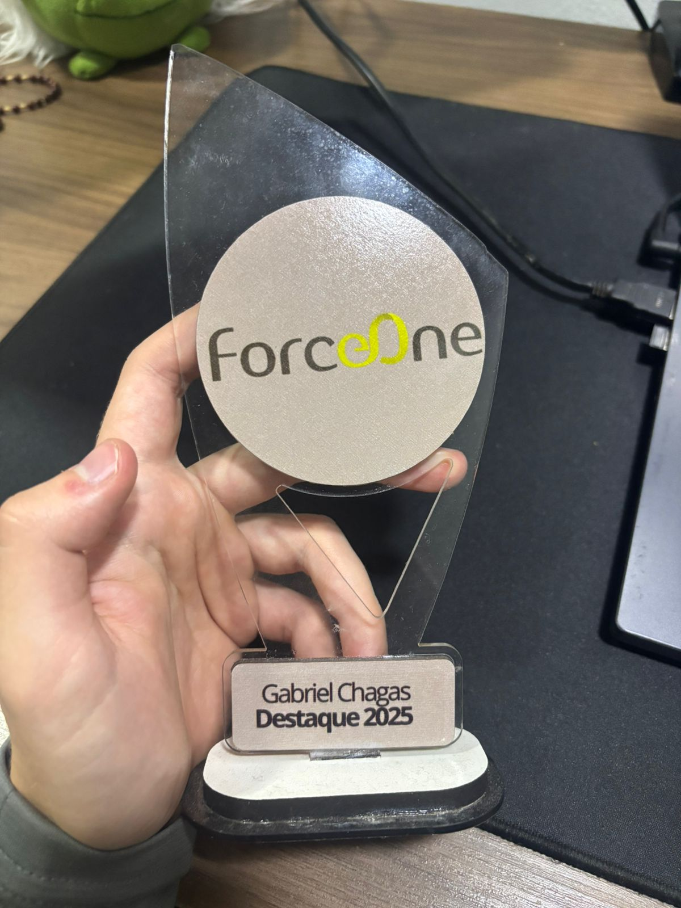

gabriel@portfolio:~$ whoami
Gabriel Chagas Lage - Arquiteto de Soluções em Cloud
gabriel@portfolio:~$ cat welcome.txt
⚡ Arquiteto de Soluções em Cloud | AWS Certified Professional
📍 Belo Horizonte, Minas Gerais, Brasil
🎓 Engenharia de Software - PUC Minas
🏆 Funcionário Destaque ForceOne 2024
gabriel@portfolio:~$ cat about.md
Gabriel Chagas Lage é um profissional em ascensão na área de computação em nuvem e DevOps, com uma trajetória marcada por especialização contínua e certificações de alto nível na AWS. Hoje, atua como Arquiteto de Soluções em Cloud Jr na ForceOne, onde desenha e implementa arquiteturas robustas, seguras e escaláveis, sempre alinhando soluções técnicas às necessidades de negócio.
Sua experiência prática inclui projetos de migração para cloud, automação de infraestrutura, e aplicação de FinOps para manter custos sob controle sem comprometer a performance. Antes, desenvolveu uma sólida base como Estagiário DevOps na eduCAT Tecnologia, trabalhando com containers, orquestração (Kubernetes, Docker, Helm), infraestrutura como código (Jenkins, CodePipeline, Terraform) e gerenciamento de ambientes AWS.
No campo acadêmico, Gabriel está cursando Engenharia de Software na PUC Minas e já possui formação técnica em informática pelo Colégio COTEMIG. Seu portfólio de certificações AWS impressiona, incluindo níveis Professional, Associate e Foundational, reforçando sua capacidade de lidar com desafios complexos e arquiteturas de alto nível.
gabriel@portfolio:~$ cat awards.txt

Funcionário Destaque ForceOne 2024
Reconhecimento pelo desempenho, dedicação e resultados excepcionais em projetos de Cloud Computing e DevOps na ForceOne.
🔗 Ver no LinkedIn
gabriel@portfolio:~$ ls -la ./experience/
Arquiteto de Soluções em Cloud Jr
ForceOne • Tempo integral
Mai 2025 - Presente · 4 meses
• Desenho e implementação de arquiteturas em nuvem com foco em segurança, escalabilidade e eficiência operacional
• Participação em projetos de migração de sistemas para ambientes cloud
• Proposição de soluções alinhadas às necessidades técnicas e de negócio
• Criação de automações para gestão de infraestrutura
• Aplicação de práticas de FinOps para otimizar e controlar custos em nuvem
Estagiário DevOps
eduCAT Technology • Estágio
Ago 2023 - Mai 2025 · 1 ano 10 meses
• Desenvolvimento de habilidades em arquitetura de nuvem
• Participação em projetos de migração e automação
• Aprendizado de práticas DevOps e cloud computing
• Suporte em projetos de infraestrutura como código
• 🏆 Funcionário Destaque ForceOne 2024
Estagiário DevOps
eduCAT Technology • Belo Horizonte, MG
Jun 2022 - Jul 2023 · 1 ano 2 meses
• Orquestração de containers utilizando Docker, Kubernetes e Helm
• Implementação de sistemas na Cloud AWS (CodeBuild, Secret Manager, EC2, ECR, CodePipeline, Route 53, Lambda, IAM, CloudFront, S3)
• Gerenciamento de servidores NGINX
• Criação e monitoramento de projetos no Google Firebase
• Automação de implantação usando Terraform
• Utilização do Jenkins para integração e implantação contínua
• Administração do Proxmox para virtualização
• Gerenciamento de instâncias MongoDB em ambiente Kubernetes
• Administração do Billing na AWS
gabriel@portfolio:~$ cat education.json
Bacharelado em Engenharia de Software
PUC Minas
Fev 2023 - Dez 2027
Graduação em andamento com foco em desenvolvimento de software, arquitetura de sistemas e tecnologias emergentes.
Técnico em Informática
Colégio COTEMIG
2021 - 2022
Formação técnica em informática com base em programação, redes e infraestrutura tecnológica.
gabriel@portfolio:~$ find ./certifications -type f
AWS Certified Solutions Architect – Professional
Amazon Web Services (AWS)
Jul 2025 - Jul 2028
Certificação avançada que valida competências em design e implementação de arquiteturas distribuídas e sistemas na AWS. Demonstra expertise em arquiteturas complexas, migração para cloud e otimização de custos.
🔗 Ver Credencial
AWS Certified SysOps Administrator – Associate
Amazon Web Services (AWS)
Out 2024 - Out 2027
Certificação que comprova habilidades em administração de sistemas na AWS, incluindo monitoramento, troubleshooting, automação de tarefas operacionais e implementação de práticas de segurança.
🔗 Ver Credencial
AWS Certified Solutions Architect – Associate
Amazon Web Services (AWS)
Jul 2024 - Jul 2027
Validação de conhecimentos em arquitetura de soluções na AWS, incluindo design de aplicações resilientes, seguras e escaláveis na nuvem usando os serviços AWS.
🔗 Ver Credencial
AWS Certified Cloud Practitioner
Amazon Web Services (AWS)
Set 2023 - Set 2026
Certificação fundamental que demonstra conhecimento geral da AWS Cloud, incluindo serviços principais, segurança, arquitetura, preços e suporte.
🔗 Ver Credencial
gabriel@portfolio:~$ ls -la ./projects/
Projeto 1 - [Nome do Projeto]
[Data] - [Status]
[Descrição do projeto, tecnologias utilizadas, objetivos e resultados obtidos]
Tecnologias: [Lista de tecnologias]
Link: 🔗 Ver Projeto |
📂 GitHub
Projeto 2 - [Nome do Projeto]
[Data] - [Status]
[Descrição do projeto, tecnologias utilizadas, objetivos e resultados obtidos]
Tecnologias: [Lista de tecnologias]
Link: 🔗 Ver Projeto |
📂 GitHub
Projeto 3 - [Nome do Projeto]
[Data] - [Status]
[Descrição do projeto, tecnologias utilizadas, objetivos e resultados obtidos]
Tecnologias: [Lista de tecnologias]
Link: 🔗 Ver Projeto |
📂 GitHub
gabriel@portfolio:~$ git log --social-projects
Code Club - Voluntário
Mai 2022 - Jan 2023 · 9 meses
Participação voluntária em projeto de inclusão digital, ajudando na inclusão de crianças no mundo da programação. Ensino de conceitos básicos de programação e lógica computacional para jovens em comunidades.
Agência Experimental de Software
Fev 2024 - Jul 2024
Participação em projeto acadêmico focado no desenvolvimento de soluções de software para problemas reais da comunidade, aplicando conhecimentos de engenharia de software em projetos de impacto social.
Programa de Padrinhos
Jul 2024 - Dez 2024 | Jan 2025 - Jul 2025 (Coordenação)
Mentoria e coordenação de programa voltado para desenvolvimento pessoal e profissional de jovens. Responsável pela organização de atividades educacionais e desenvolvimento de habilidades tecnológicas.